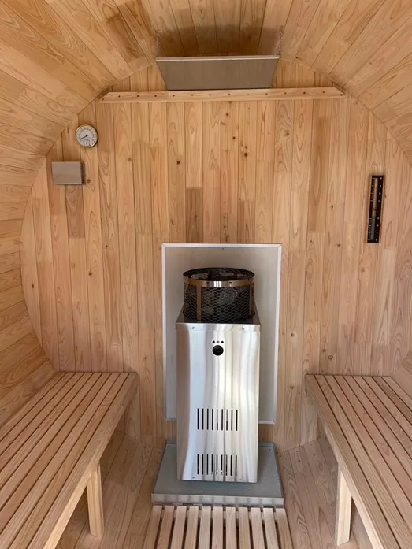

「屋外の家庭用サウナを導入したい」「維持費が高くつかないか不安」「安価なサウナを選んで後悔したくない」など、お悩みではありませんか？
こちらでは、屋外の家庭用サウナの一般的な価格帯やランニングコストの内訳、安価なサウナを選ぶ際のリスクと注意点について詳しく解説します。設置費用を抑えるコツや、長く快適に使うためのポイントも紹介するため、サウナ選びで失敗を避けたい方に役立つ内容です。
6次産業により高品質な国産ひのき材を使用したバレルサウナを提供するRink SAUNAがお届けする情報です。最後まで読めば、自分に合った屋外サウナの適正価格や維持費がわかり、安全に長く使えるサウナを選ぶための判断基準が身につくでしょう。
屋外の家庭用サウナ：一般的な価格相場
屋外の家庭用サウナを検討する際、まず気になるのは価格相場ではないでしょうか。価格はサウナの種類（テント・バレル・コンテナなど）・材質・サイズ・耐久年数などによって大きく異なります。これから自宅や別荘に屋外のサウナを取り入れたいと考えている方に向けて、代表的なサウナの種類ごとの価格相場をご紹介します。自分に合ったサウナ選びの参考にしてください。
屋外サウナの価格帯：どれくらいが相場？
屋外設置型の家庭用サウナを検討している方にとって、気になるのが価格ではないでしょうか。
まず、家庭用サウナといっても、構造・材質・熱源・設置方法によってその種類は多岐にわたり、価格にも大きな幅があります。
以下では、代表的な屋外サウナの種類ごとに、おおよその価格帯をまとめました。
| サウナの種類 | 価格相場 | 特徴 |
|---|---|---|
| 簡易テントサウナ | 1万円～30万円 | 設置が容易で移動が可能。場所を問わずサウナを楽しめる。 |
| バレルサウナ | 160万円～400万円 | 庭や広い屋外、屋上やテラスなどのスペースに設置。自宅周囲の自然や風景を鑑賞しながら本格的なフィンランド式サウナが楽しめる。 |
| ログサウナ | 800万円～1,500万円 | 小屋のような本格構造。断熱性・耐久性に優れるが、建築申請など法令対応が必須になる |
このように、簡易テントサウナは比較的安価に手に入りますが、機能や耐久性は限られており、外部の天気や気候に影響されやすいため、安全面では他のサウナより欠けています。一方、本格ログサウナは高価で断熱性や耐久性に優れ、長く快適なサウナ体験を提供できますが、「建築物」とみなされるため、建築確認申請が必要になるケースがほとんどです。
そのなかで、バレルサウナは比較的手頃な価格で、本格的なサウナ体験を楽しめる点が魅力です。
また、ほどんどのバレルサウナは面積が10平方メートル以下であり、防火・準防火地域以外での設置（増設）は、建築確認申請が不要です。
サウナの価格を左右する要素は、主にサウナの大きさ・材質・熱源のスペック・メーカーなどが挙げられます。大きなサウナは材料費や施工費がかさむため、価格が高くなる傾向があります。また高品質な木材を使用していたり、高度な温度制御機能が搭載されている熱源も、価格が高くなるでしょう。
安価なサウナは初期費用を抑えられるメリットがある一方、機能性や耐久性が劣る可能性があるため注意が必要です。特に、頻繁な雨漏れや木材のひび割れ、断熱不足による温まりにくさなどのトラブルが発生しやすく、結果としてサウナ体験の満足度を大きく下げてしまうリスクがあります。特に海外産の輸入サウナ製品では木材・ヒーターのまま輸入され、国内でのサポートや修理が受けにくいといった懸念もあります。
購入前に、サウナのサイズ・材質・機能を確認し、自身のニーズや予算に合ったサウナを選びましょう。
価格を左右する要素とは？
家庭用屋外サウナの価格を決める要素は複雑に絡み合っています。購入を検討する際、コストパフォーマンスを最大限に高めるためには、これらの要素を理解することが必要です。
価格の相場は、サウナの大きさ・材質・熱源のスペック・設置費用など、さまざまな要素によって変動します。以下に要素をまとめました。
| 要素 | 説明 |
|---|---|
| 大きさ | 収容人数に比例 |
| 材質 | 国産ひのき、レッドシダーなど |
| ストーブ | 薪、電気、ガスなど |
| 設置費用 | 搬入場所や工事内容による |
まず、サウナの大きさです。当然ながら、収容人数が多い大型サウナは、小型サウナよりも価格が高くなる傾向があります。
次に、サウナの材質も価格に大きく影響します。たとえば、高品質な国産ひのき材を使用したサウナは、他の木材に比べて価格が高くなる可能性があります。一方、輸入材のパインなどを使用することで、価格を抑えることも可能です。使用頻度や今後のメンテナンスを考えると、耐久性の高い材質を選ぶことで、長期的なコストを抑えられます。
ストーブの設置費用もそれぞれ種類によって異なります。
- 薪ストーブの場合：屋外排煙のための煙突工事が必須です。
- 電気ストーブの場合：出力に沿った電源（単相200Vまたは三相200V）、十分な契約アンペア数が必要で、電気工事費用が発生します。
- ガスストーブの場合：ガス会社による接続・検査が必要で、配管工事が必須です。
また、設置場所や設置工事の難易度も価格に影響します。たとえば、既存の建物内にサウナを設置する場合と、庭を整地してサウナを設置するための基礎工事（コンクリート）では、設置費用も大きく異なる可能性があります。
これらの要素を考慮しながら、予算やニーズに合ったサウナを選びましょう。価格だけを重視すると、品質や機能面で妥協が必要になる場合もあります。
屋外家庭用サウナのランニングコスト（維持費）はどのくらい？

ここでは、ランニングコスト（維持費）について解説します。家庭用サウナの維持費は、サウナの種類や使用方法によって大きく変動します。電気式ヒーター、薪ストーブ、ガスストーブそれぞれのランニングコストを以下の表にまとめました。
| 項目 | 電気式 | 薪式 | ガス式 |
|---|---|---|---|
| 1時間あたりの費用相場 | 130円～200円 | 250円～400円 | 150円〜250円 |
| 月額費用相場（毎日2.5時間・30日間使用の場合） | 1〜2万円程度 | 3万円程度 | 1.5万円程度 |
| そのほか | 定期的なメンテナンス費用 | 煙突掃除や灰の処理 | 配管の点検費 |
電気式サウナヒーターの場合、1回の使用で約130円～200円程度の電気代が相場です。毎日1時間使用する場合は、月額で約1〜2万円程度の電気代（1日2.5時間・30日間）がかかると想定されます。
薪ストーブの場合は、地域によって費用が大きく変わります。しかし、1回の使用で約5kgから15kgの薪代が必要となるケースもあります。
ガスストーブの場合は都市ガスやプロパンガス（LPG）を使用し、立ち上がりが早く効率的でロウリュウも楽しめます。地域や契約プランによりますが1時間約150円～250円の間が相場です。毎日2.5時間使用する場合は、月額で約1.5万円程のガス代がかかります。
そのほか、定期的なメンテナンス費用も考慮する必要があります。サウナヒーターの点検や修理、サウナ室の清掃なども必要です。
格安の屋外家庭用サウナは要注意！リスクと選び方のポイント
格安の外サウナに潜むリスクと賢い選び方のポイントを解説します。
初期費用を抑えようと安価なサウナを選んでしまうと、後々維持費が高くついてしまったり、安全性に問題が生じたりする可能性があります。快適なサウナライフを送るためには、価格だけでなく、材質・機能性・安全性にも注目することが大切です。
材質
安価な木材を使用していると、腐食や劣化が早く、耐久性が低くなります。高品質で耐久性のある木材（国産ひのきなど）を使用しているか確認しましょう。
断熱性
断熱性が低い場合、温まるまでに時間が必要です。また、温度が維持しにくく、光熱費が高くなります。断熱材の種類や厚さを確認し、高い断熱性能を持つサウナを選びましょう。
安全性
海外産のサウナは板材を貼り合わせたで使用する接着剤は有害な化合物が含まれるかどうかが不明なため、高温環境下で未知接着剤を揮発して健康被害のリスクも懸念されます。
国内でPSE認証の取れた電気ヒーターであるか、安全基準を満たしているか確認し、信頼できるメーカーや販売店から購入しましょう。
機能性
サウナストーブの性能が低いと、温度が上がりにくく、快適なサウナ体験ができません。サウナストーブの出力や機能性を確認しましょう。
信頼性
特に、低価格サウナ（本体価格：20～30万円台～／総額100～150万円程）をうたうサウナ業者の一部から製品を購入された方より、以下のようなご相談をいただくケースが増えています。
- 前金（100％）で代金を支払った後、急に担当者の連絡レスポンスが悪化
- 納期から大幅に遅れる（予定日から半年・1年以上）
- 購入した製品の仕様とは別の製品が届いた
- 返金催促や解約通知書を出しても、返事がこない
- 返金の和解が成立したが、その返済期日に返金がされない
価格は大切な要素の一つではありますが、残念な結果を招き、泣き寝入りする事態は絶対に避けて頂きたく、ご購入前に必ず情報収集をしてください。
相場よりも極端に安いサウナには、上記のようなリスクが潜んでいる可能性があります。購入前にしっかりと下調べを行い、長期的な視点でコストパフォーマンスを考慮することが大切です。初期コストだけに重きを置かず、安全性や機能性、維持費なども含めた総合的な判断を行いましょう。
屋外の家庭用サウナについてお悩みの方はRink SAUNAまで
贅沢なリラックスタイムを楽しみませんか？
屋外に設置できる、Rink SAUNAの家庭用サウナは、手軽に本格的なサウナ体験を叶える理想的なアイテムです。Rink SAUNAのバレルサウナは、国産ひのきを使用し、防腐防虫性・高い耐久性を備えた特別設計。薪ストーブ・電気ヒーター・ガスストーブの選べる熱源で、ライフスタイルに合った最適なサウナ空間を実現します。
Rink SAUNAでは特許申請中のサウナ構造である「Mitsuna構造」により、高気密性を実現。
構造の継ぎ手部分の特殊加工による高い熱効率により、他のバレルサウナでは得られないサウナ室が実現できます。
全国配送に対応し、専門の施工スタッフが現地で設置までサポートするため、安心して導入できます。これまで、Rink SAUNAが原因の納期遅延は一度もありません。高品質な素材と確かな技術で、快適なサウナライフをお届けします。
家庭で手軽に本格的な屋外サウナを楽しみたい方、ビジネス用途で導入を検討している方も、お気軽にご相談ください。心身ともに癒やされる特別な空間を、Rink SAUNAで手に入れましょう。